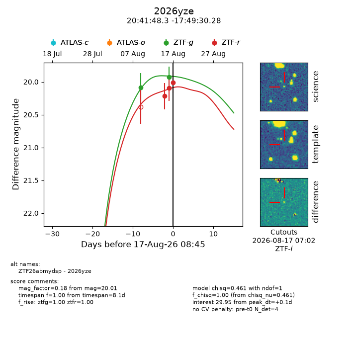
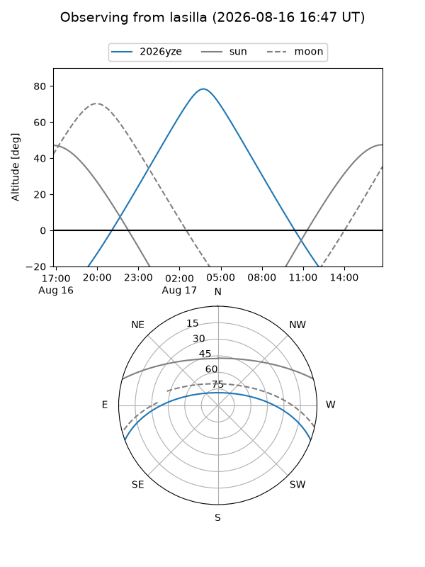
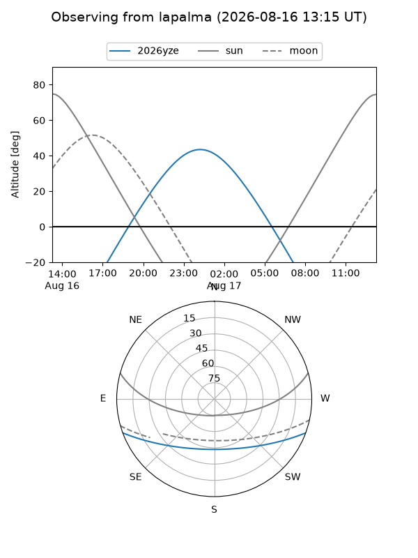
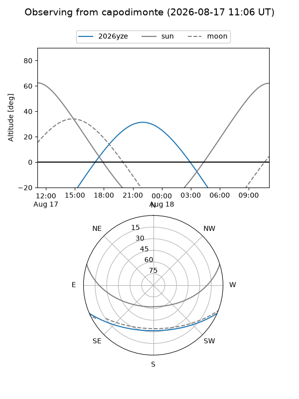
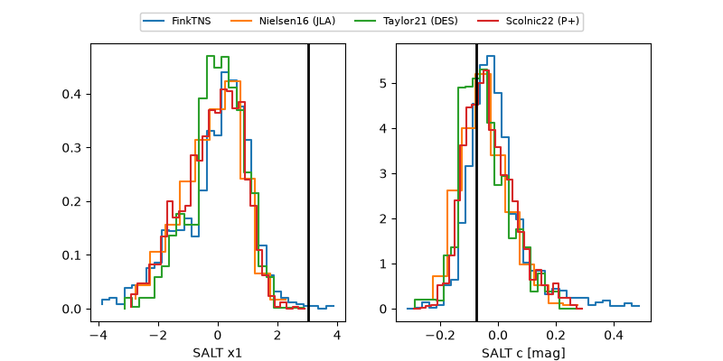

2026yze
Target 2026yze at 2026-08-17 08:48
Aliases and brokers:
FINK-ZTF: ztf.fink-portal.org/ZTF26abmydsp
Lasair-ZTF: lasair-ztf.lsst.ac.uk/objects/ZTF26abmydsp
ALeRCE-ZTF: alerce.online/object/ZTF26abmydsp
YSE-PZ: ziggy.ucolick.org/yse/transient_detail/2026yze
TNS name: wis-tns.org/object/2026yze
Direct TNS query: direct search
alt names
ZTF26abmydsp (ztf,fink_ztf)
2026yze (tns,yse)
Coordinates:
equatorial (ra, dec) = 310.4513,-17.82508
equatorial (HMS+DMS) = 20:41:48.31,-17:49:30.28
galactic (l, b) = (28.0964,-32.14132)
Flags:
TNS type: nan
peak dt: +0.1
Photometry:
last ztfg=19.93, ztfr=20.01
2 ztfg, 3 ztfr detections
Lightcurve

Visibility



Additional plots
